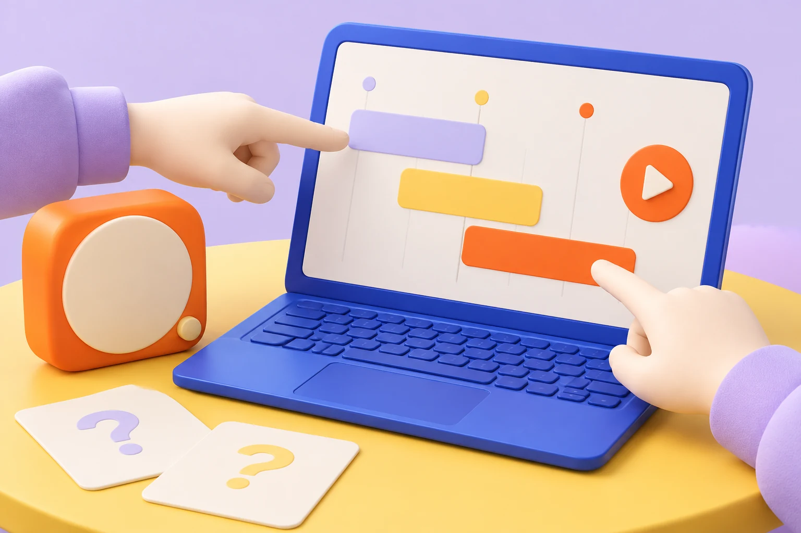

联野 / 新品进入市场01
联野 × 品牌团队
先找到，
谁会想买。
✓ 产品解决什么问题
✓ 哪类买家最有需求
✓ 在哪里能遇见他们
交付：优先人群与销售场景↗

让会用的人讲清楚：它能帮买家解决什么。
给 AI 创业团队与渠道负责人
找到适合新品的销售入口，准备打动买家的介绍与体验，
把购买意向交到品牌手中。
内容创作者 · 社群主理人 · 零售经营者
实测内容 · 共同试用 · 到店体验
品牌直连 · 成交履约 · 持续跟进
01 / 新品去哪里卖
内容里被种草，社群里一起试，门店里亲手体验。
为你的产品，选对第一站。
科技内容 · 数码测评 · 设计与影像
把新品交到懂它的创作者手中。用真实任务展示效果，让潜在买家知道：这件产品，和我有什么关系。

联野协助：筛选创作者、准备实测提纲、协调样机与品牌答疑。
把产品带到买家面前
把新品带进一场主题活动。集中展示、现场上手、品牌答疑，让路过的人停下来，让感兴趣的人试一次。
02 / 怎样让买家想试
软件带进自己的工作，硬件放进日常生活。
用一次切身体验，回答一个购买前的问题。

01 / 带上自己的素材
AI 软件 / 带进真实工作
创作者带上自己的素材，走完从输入到输出的一次任务。把通用演示，变成买家自己的使用体验。
03 / 为新品拓宽销路
从亲子空间到创作者社区，从数码零售到企业服务。
按产品和人群，发现值得进一步接洽的经营者。
没有找到对应经营者。试试其他关键词或清除筛选。
还有适合你产品的方向？带上新品，一起聊聊。
不确定从哪里开始？
一起为你的新品，选一条值得先走的路。
这里展示的是公开市场中的经营者，供选择销售方向时参考，并非联野已签约合作网络。具体业务、准入与合作条件需进一步沟通；公开来源收在名称详情中。
04 / 从一个入口，走向可复制的销路
准备材料、对接经营者、组织体验，
让购买咨询，回到你的团队。
联野 × 品牌团队
✓ 产品解决什么问题
✓ 哪类买家最有需求
✓ 在哪里能遇见他们
咨询 · 成交 · 履约 · 售后
结合产品阶段、使用价值与交付条件，梳理目标人群和购买场景。先聚焦值得投入的方向，让后续找渠道更有针对性。
销售场景、购买理由、内容与体验方案。
经营者对接、样机安排、现场与品牌协同。
买家反馈、咨询与成交复盘、后续渠道建议。
给产品品牌
无论是可体验的 Demo，还是准备开售的新品，
一起找到适合当前阶段的销售打法。
给销售伙伴
你了解自己的受众与场景，
一起寻找值得推荐、体验与经营的新产品。
你可能还想了解
有可体验的 Demo，就可以先讨论目标人群、使用场景和试用方式。产品具备供货、交付与服务条件后，再推进首销。第一次沟通，带上产品介绍、可体验的内容，以及你最想解决的销售问题。
围绕一款新品，确定优先人群与销售场景，准备内容和体验方案，筛选并对接经营者，协同试用与品牌承接，再用反馈、咨询、成交与投入决定下一步。我们从一个明确范围的合作开始，具体交付、周期和责任在启动前约定。
原则上由品牌直接成交、履约与售后。联野推进渠道沟通和合作协同，经营者围绕自己的受众与场景组织推荐或体验。品牌保留产品、价格与服务的主导权。
按实际服务范围约定服务费；涉及成交或增量价值时，提前明确归因、退款、结算周期与费用上限。先把投入和交付说清楚，再启动合作。
辅助整理产品和经营者信息、比较场景、准备内容与反馈材料，减少重复工作。产品事实由品牌确认，对接和合作由人推进。
先聊聊，你想把产品卖给谁
第一次沟通，带上这三件事：